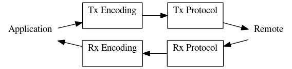

When using data communications with Prosody, a channel is configured for a protocol and an encoding. The protocol transports data which is formatted according to the encoding. A full-duplex connection looks like this:

Half a channel can be used to provide only an input or an output connection.
The encodings available are described in Prosody data communications Encodings while the protocols are described in Prosody data communications Protocols.
Not every possible combination of protocol and encoding is possible. These are the available combinations: